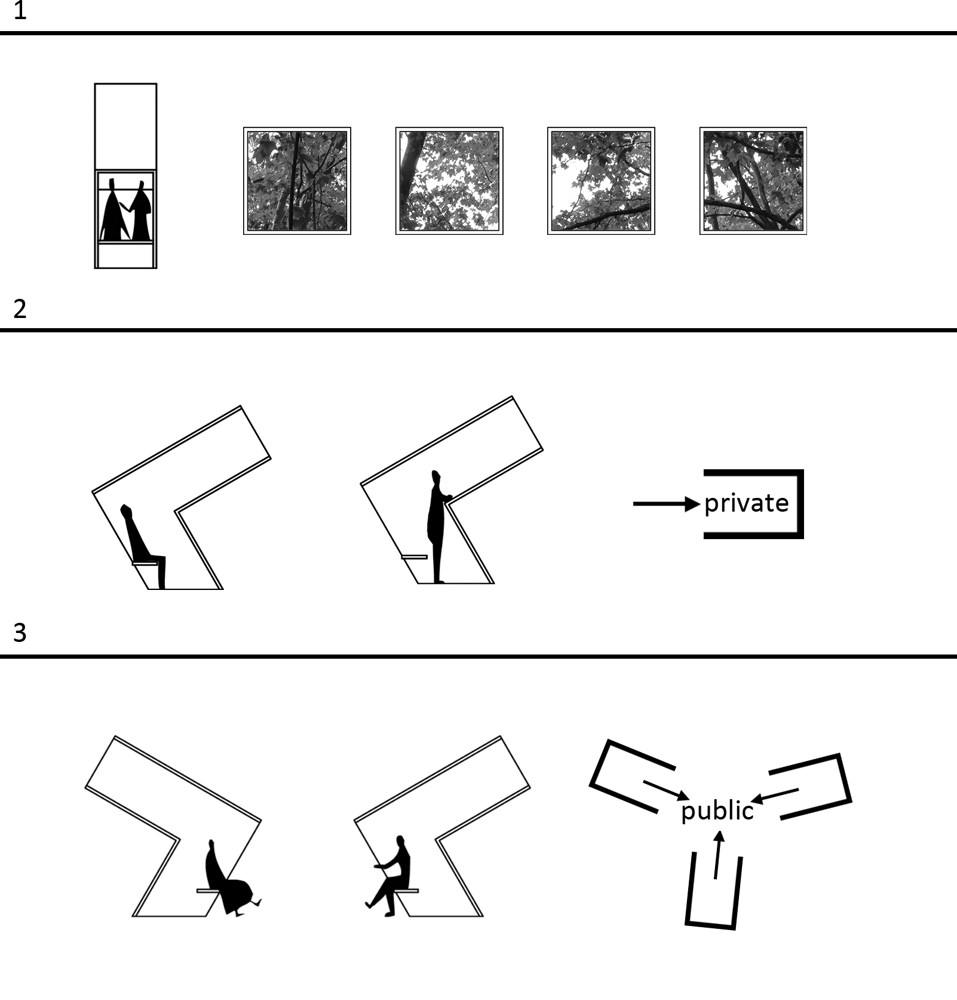
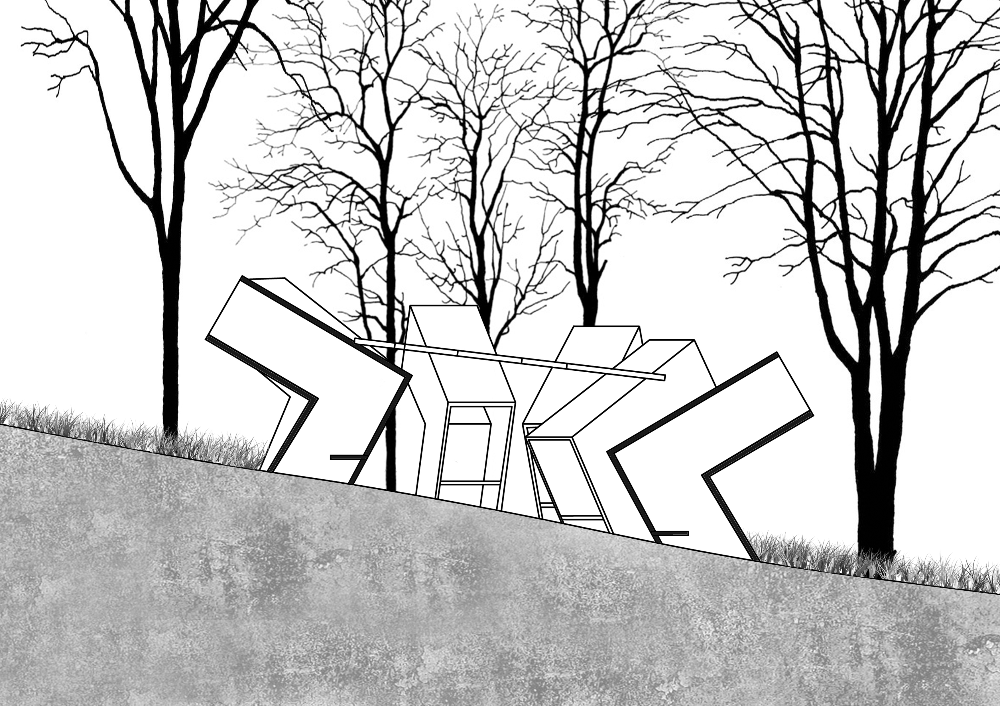
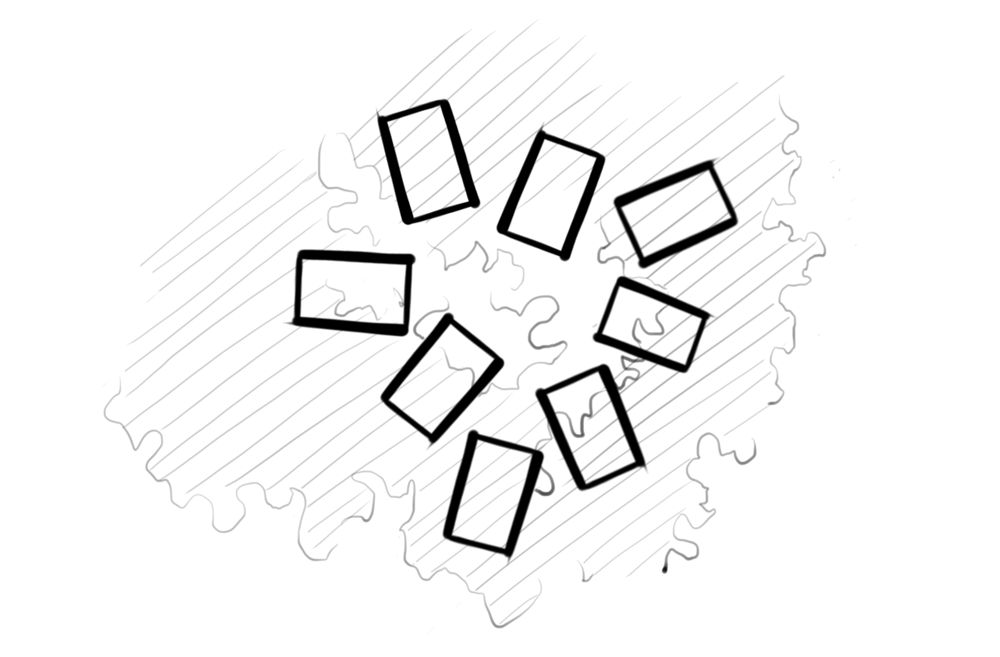

[Time] November, 2016

Keywords: view frames, privacy and publicity
[Group Work] Individual
[Time] November, 2016
+Description
It is an installation comprised of several inclined view frames for focusing on the upper parts of nature. The view above our eye level is usually ignored, but I found the upper views of this forest, with beautiful lights and shadows, are quite meditative and absorbing for escaping from the dysphoria of the horizon.
+Concept

1) views to the upper nature: The shells of the installation frame the natural views higher than our eye level, which are filled with the swinging leaves and their lights and shadows.
2) outwards privacy: When people sit outwards, the pavilion forms a private space with the pure nature.
3) inwards publicity:
When people face inwards, the shells wrap around a public courtyard for people.
+Section & Plan

